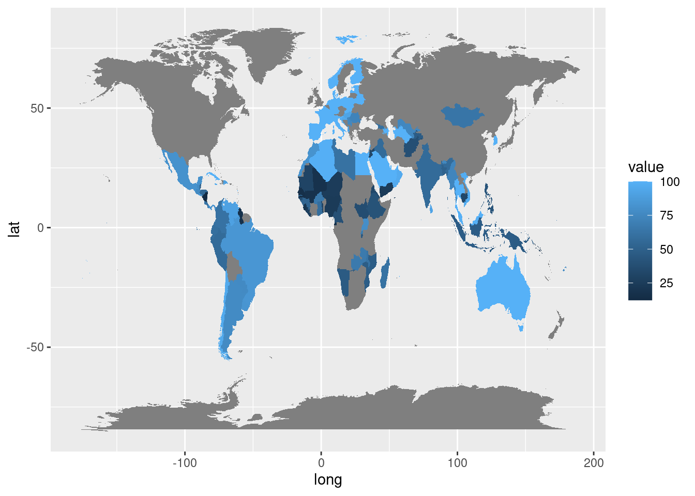
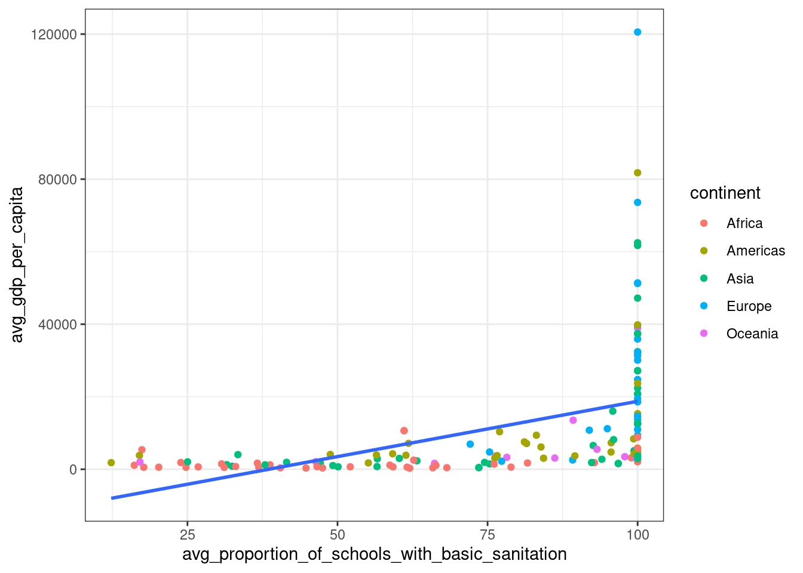
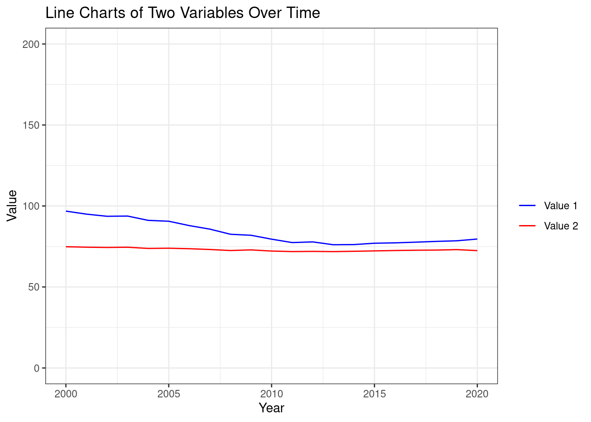
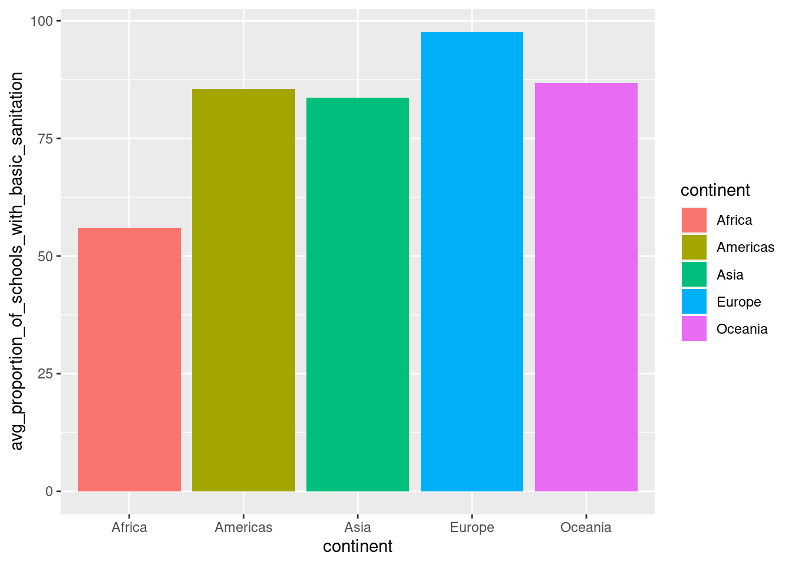

UNICEF
What proportion of schools has basic sanitation?
The world map chart shows the average proportion of schools with basic sanitation across different countries. Upon further exploration, the scatter plot shows that countries with greater average GDP per capita have a better proportion of schools with basic sanitation than countries with lower average GDP per capita.
When analyzed further, from the time series chart, it can be found that the average life expectancy and the average proportion of schools with basic sanitation are positively correlated because a lack of basic sanitation can increase the transmission of diseases. When the average life expectancy at birth and the average proportion of schools with basic sanitation is observed across the years, as the proportion of schools with basic sanitation decreased, the average life expectancy also reduced.
Lastly, the bar chart highlights the disparities in the proportion of schools with basic sanitation across different continents.
Therefore, it is high time that the public should focus on improving basic sanitation in schools to achieve greater life expectancy.
World map chart
In the below world map, the lighter the blue color’s intensity higher the proportion of schools with basic sanitation. The legend name value indicates the avg proportion of schools with basic sanitation
Scatter Plot with regression line
The scatterplot identifies that no country with above 40,000$ GDP per capita has a value of less than 100 for the average proportion of schools with basic sanitation.

Time Series Chart
The time series chart below identifies the positive correlation between the avg life expectancy and avg proportion of schools with basic sanitation. Here Value 1 is avg proportion of schools with basic sanitation and value 2 is avg life expectancy

Bar chart
From the below bar chart, it can be understood that the most developed continents have a higher proportion of schools with basic sanitation.

Conclusion:
To sum up, this report uses
World map chart
Scatter plot with regression line
Time series chart
Bar chart
to raise awareness among the public on the world issue: proportion of schools with basic sanitation.